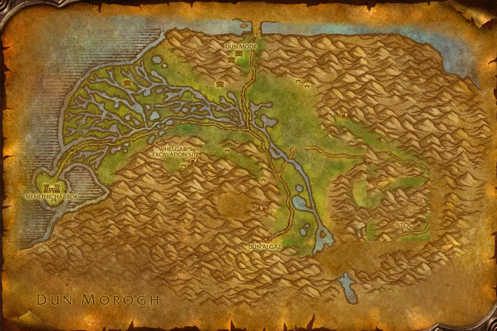

Accès
 Entrée Les Paluns 47.8, 56.2
Entrée Les Paluns 47.8, 56.2 5 joueurs · niveaux 24 à 29
5 joueurs · niveaux 24 à 29 14 quêtes · 0 boss
14 quêtes · 0 boss
Le point rouge marque l'entrée du donjon.
Toutes les zones sont sur notre carte interactive.
Un nouveau donjon de Forever, ouvert dans les fouilles naines des Paluns.
📅 Mise à jour le 4 novembre 2026🛠 Patch 1.60.1.70755

Entrée Les Paluns 47.8, 56.2 5 joueurs · niveaux 24 à 29 14 quêtes · 0 bossLe point rouge marque l'entrée du donjon.
Toutes les zones sont sur notre carte interactive.
Le butin de ce nouveau donjon sera ajouté dès qu'il sera connu. Passe la souris sur un objet pour voir ses caractéristiques (info-bulle Wowhead), ou clique pour ouvrir sa fiche.
Donnée par : James Halloran (Les Paluns)
Donnée par : Borstan (Orgrimmar)
Donnée par : Daewyn Songblade
Donnée par : Zaruk (Hautes-terres d'Arathi)
Donnée par : Bashana Runetotem (Les Pitons-du-Tonnerre)
Donnée par : en ramassant un objet
Donnée par : Ardin Grassman
Donnée par : Rethiel le Gouverneur vert (Les Paluns)
Donnée par : en ramassant un objet
Donnée par : Caitlin Grassman (Les Paluns)
Donnée par : Agent Traqueur noir (Les Paluns)
Donnée par : Prospecteur Whelgar (Les Paluns)
Donnée par : Llana (Orneval)
Donnée par : Dorin Songblade (Les Carmines)
Noms des quêtes, des PNJ et des objets d'après les données du jeu (Polestar, CC BY 4.0, et Factoruide/Questie).